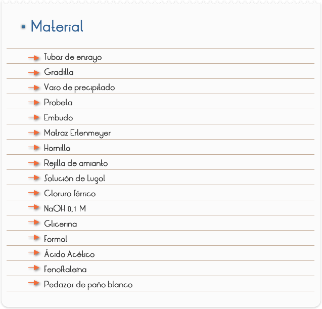
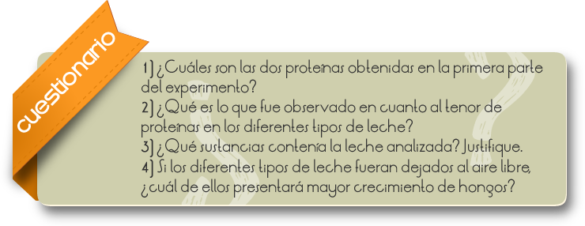
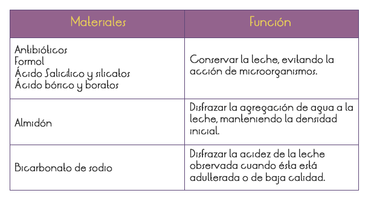

Introducción
El ser humano, desde su nacimiento, utiliza la leche como parte integrante de su alimentación y, los adelantos en las técnicas relacionadas con las etapas de producción, procesamiento y distribución de la leche han favorecido, aún más, su consumo humano. Esas etapas, sin embargo, inducen a alteraciones bioquímicas, físico-químicas, microbiológicas, nutricionales, sensoriales y reológicas (en el comportamiento mecánico) que pueden comprometer la calidad del producto final. La química de la leche se tornó muy importante para la garantía de calidad y el desarrollo de productos lácteos. Así, el estudio de la química de la leche envuelve especialistas de diferentes áreas, en vista de la complejidad de las interacciones entre los constituyentes de la leche y los tratamientos tecnológicos empleados.
La calidad de la leche es controlada por los institutos de salud pública, por medio de pruebas específicas, que implican la determinación de densidad, consistencia, rancidez y acidez, como también la presencia de conservadores o sustancias extraños a la leche como agua.
Objetivo
Separar y cuantificar cualitativamente las proteínas de la leche y realizar pruebas para la verificación de sustancias extrañas a la misma.

PARTE I: COMPARACIÓN DE LOS DIFERENTES TIPOS DE LECHE EN RELACIÓN A CANTIDAD DE PROTEÍNAS
1) Calentar la leche en un vaso de precipitado hasta que quede tibia (sin hervir).
2) Retirar del calor y agregar, lentamente, 10 ml. de ácido acético, hasta que se formen grumos de un material blanco. Ese material es una proteína de la leche
3) Filtrar, a través de un paño recogiendo el líquido en otro vaso de precipitados. Guardar la proteína.
4) Llevar el líquido filtrado nuevamente al fuego y dejarlo hervir por 5 minutos. Se formará una nueva proteína que también deberá ser filtrada, después de que el líquido esté casi frío. El líquido debe ser conservado para pruebas posteriores. Comparar la cantidad de ambas proteínas y, también, con los demás tipos de leche trabajados por lo otros grupos.
PARTE II: PRUEBAS PARA IDENTIFICACIÓN DE SUSTANCIAS EXTRAÑAS A LA LECHE.
A) TEST PARA EL ALMIDÓN
1) Colocar 5 ml. de leche en un tubo de ensayo y calentarlo levemente.
2) Agregar 5 a 6 gotas de solución de lugol. La aparición de una coloración azul, morada o casi negra, es indicio de que la leche contiene almidón
B) TEST PARA EL ÁCIDO SALICÍLICO Y SALICILATOS
1) Coloque 4 a 5 gotas de solución de cloruro de hierro III en 10 ml. de suero. La aparición de una coloración que va del rosa hasta el violeta indica la presencia de anión salicilato.
C) TEST PARA EL ÁCIDO BÓRICO
1) En un matraz Erlenmeyer, colocar 3 gotas de fenolftaleína a 5 ml. de leche.
2) Agregar gota por gota NaOH 0,1 M hasta la aparición de una leve coloración rosada.
3) Agregar entonces 1 ml. de glicerina. La desaparición del color rosado puede ser indicio de la presencia de ácido bórico.

RESULTADOS Y CONCLUSIONES
La tabla 1, a continuación, muestra algunas sustancias que ya fueron encontrados en la leche y su función en el "proceso" de adulteración. En nuestro experimento, con pruebas simples, podemos determinar la presencia de ellas
Cuadro 1:

En el test "A":
Si la leche contuviera almidón, aparecerá una coloración que puede ser azul, morada o casi negra, la cual se debe a la formación de un complejo almidón y yodo.
En el test "B":
La aparición de una coloración que va desde el rosado hasta el violeta indica la presencia del anión salicilato.
En el test "C":
La desaparición del color rosado puede indicar la presencia de ácido bórico. Esto porque el H3BO3' que es un ácido muy débil en soluciones muy diluídas, presenta mayor grado de ionización en la glicerina, lo suficiente para hacer desaparecer la coloración rosada.